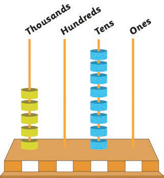
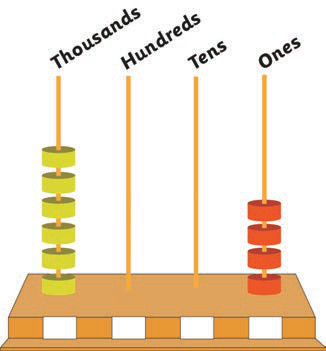

Example 2
Write the place value of each digit in the following abacus:

Answer
The abacus represents 5080. There are 5 thousands, 0 hundreds, 8 tens, and 0 ones.
Example 3
Write the place value of each digit in the following abacus:

Answer
The abacus represents 6004. There are 6 thousands, 0 hundreds, 0 tens, and 4 ones.